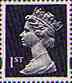
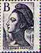
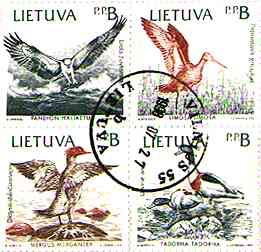
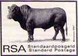

 |
Stamps That Lost Their Face |
 |
 |
Stamps That Lost Their Face |
|
Introduction
The article presented below was written quite a long time ago, but it hasn't lost its actuality. Day after day more and more stamps and stationeries of the special kind described in this article appear on the philatelic markets of different countries. Let's start with some definitions.
Explanations and abbreviations (thanks to different contributions on the RCSD newsgroup)
Notice: The price of the 2nd class stamp has been reduced in the UK since the NVIs were issued, therefore there isn't always a benefit to stock the NVIs.
| During my vacation this
summer (1997), on the splendid French Riviera, I wanted to send a picture postcard to a
friend of mine who is living in the United States. Therefore I went to a kiosk in order to
buy the right postal stamp. The polite saleswoman told me that the necessary stamps are
out of stock and that she could only sell me stamps for European countries. I asked her if
I could buy two or more "European" stamps and put them on the postcard to the
USA. The answer was that this is not allowed, because the mentioned stamps are just valid
for the specified destinations. Because the situation was the same at two other kiosks, I
gave up and sent the postcard later from Switzerland, adding the necessary explanation. I was so intrigued by this situation that I bought a booklet of ten self-adhesive stamps for Europe and began to study them more attentively. Here are the results. The design of the stamp (see above, on the right) is interesting, especially thanks to light contrast effects. Concerning the image itself, I found it rather "che-guevarish" than an expression of a French spirit of freedom. It is the representation of the eyes that troubled me, giving the impression of sunglasses, or worse of glasses worn by the tonton-macouts police. Only the vertical sides have a kind of perforation that rather seems to be there to give an aspect of a usual postal stamp. The particularity of these stamps is the absence of the face value. On the bottom side of the booklet it is explicitly written that these are 10 adhesive stamps WITH PERMANENT VALIDITY and the permitted destinations are mentioned, briefly said some European countries and French Territories (DOM-TOM). At first glance the idea seems to be simple and practical, but only at first glance. The purpose of a stamps without a face value (or "with permanent validity" in newspeak) is to eliminate the cost of material, printing and distribution of new stamps when the prices of the postal services change. There are essentially two reasons why the prices of the postal services change:
|
The supplementary costs that result from the production and distribution of stamps represent a brake that prevents to some extent the growth of the inefficiency and of the inflation. Even the method of overprinting of existing stock of stamps with new values, causes supplementary costs. The artificial removal of all costs by means of producing "eternal" stamps is equivalent to the blocking of the security valve in a high-pressure boiler, with the purpose to dissimulate an action with negative effects for the consumer. What he sees is a drop of saving instead of an ocean of losses for everybody. The solution of the problem is best shown by the proverb from the classical medicine: "Contraria contrariis curantur", with the meaning that the diseases (opposed to man) should be cured with means that oppose to them. In our case this would begin with the removal of the government’s monopoly on the postal services and a comeback to an earlier situation (I invite the less informed reader to search on an European map of the period 1852-1866 for the country named Thurn and Taxis). Some countries have already made steps in this direction. For instance in Germany, beginning at the year 2002, the monopoly of the German postal administration will expire and other companies will get the right to issue and sell their own stamps. I doubt that they will offer valueless stamps to their clients, as some national postal services do. But the biggest advantage will be, as Mr. Wojtek (the Chief of the German Union of International Courier and Express Services) stated: "The clients can count on a price cutback of 30%". The postal services of the small Principality of Liechtenstein were privatized in the year 2000 by the government, the postal union with the Switzerland being maintained. |
 |
Notice. A day after I finished and posted my article I received a leaflet from the French post. I had the surprise to read that the "eternal" stamp is not alone. Another stamp with permanent validity, named "Marianne of 14 July" (reproduction on the right) was issued on July 14th of this year (1997). It is not clear whether the old stamp will be withdrawn. The leaflet says: "The red stamp designed for standard letters of up to 20 grams may be used within France, for mail to the DOM-TOM (overseas regions of France), and for international dispatches using the inland postal rate". I could not tell whether its price has changed. Could you? |  |
|
|
 |
|
 |
|||
| Created: 7/25/97. Revised: 12/04/08. Copyright © 1997 - 2001 by Victor Manta, Switzerland. All rights reserved in all countries. |
|